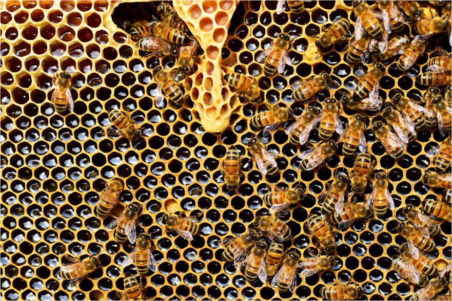

En 2004, le frelon asiatique, espèce endémique d'Asie, est introduit en France. Par la suite, il se diffusera rapidement dans toute l'Europe. L'impacte de cette espèce invasive sur notre biodiversité suscite de grosses inquétudes auprès des chercheurs. Ils s'interessent notamment aux conséquences de cette invasion sur les populations d'abeilles déja fragilisées par l'utilisation massive des néonicotinoides (insectisides utilisées en agriculture). En effet, les frelons se nourrissent de fruits et de petits insectes, les abeilles, riches en protéines, sont capturées par le frelon et ramenées à la colonie pour être dévorées par les larves. L'invasion des frelons asiatiques accélèreraient la disparition des abeilles. Contrairement aux abeilles asiatiques qui ont développées des stratégies de défence face aux frelons asiatiques, les abeilles européennes sont des cibles faciles et peuvent être décimé en grand nombre par les frelons.
A travers un modèle simple, nous chercherons à modéliser la relation complexe entre les abeilles et frelons.
Le modèle comporte plusieurs élément: